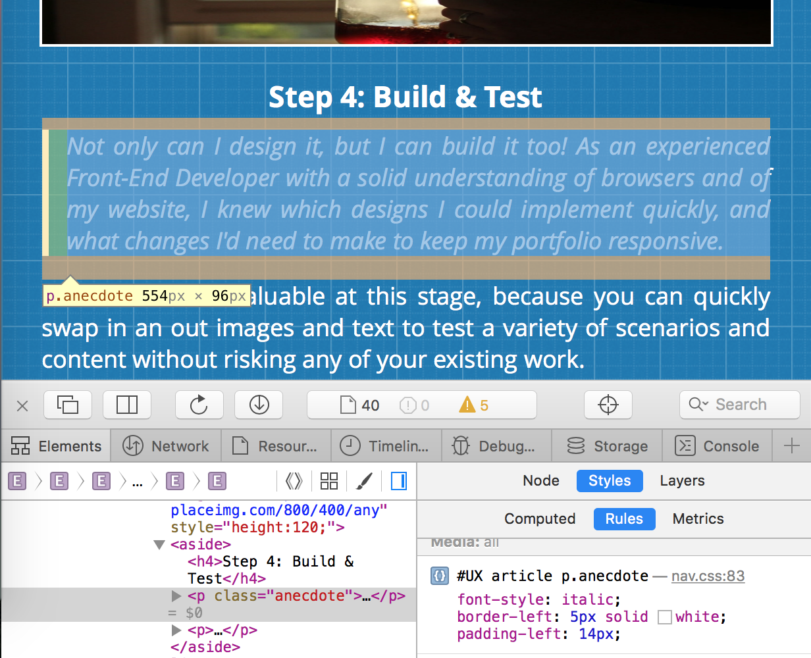
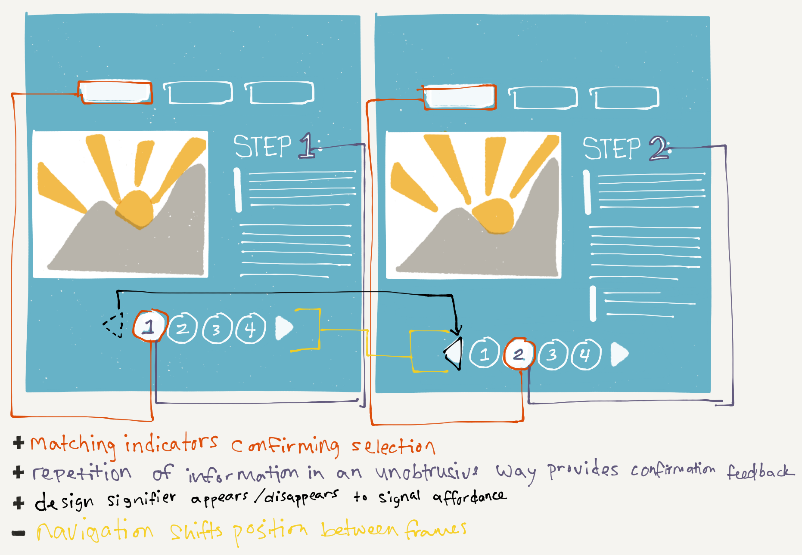

Select Portfolio
UX DESIGN
User Experience Design is designing with a focus on the quality and enjoyment of the total experience
WEBDEVELOPMENT
Front-End Development pertains to the portions of a website that visitors can see and interact with
PRINTDESIGN
Print projects can range from stickers to billboards and must be created with vector-based graphics
UX DESIGN
Case Studies
-

-

-

- 
- 
FRONT-END DEVELOPMENT
TapClick on any piece to launch the portfolio showcase.
Return to Portfolio Menu
PRINT DESIGN
TapClick on any piece to launch the portfolio showcase.
Return to Portfolio Menu